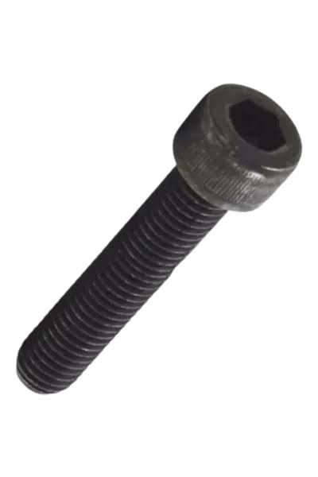
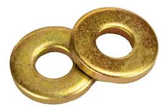
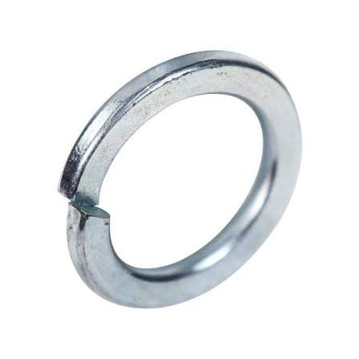

PARAFUSO
Parafuso sextavado
Fixação de uso geral em montagens e estruturas compatíveis.
- Norma
- DIN 933
- Material
- Aço carbono 8.8
- Acabamento
- Polido
PRIMEIRO PROJETO ACADÊMICO · HTML + CSS + JAVASCRIPT
Projeto desenvolvido a partir de uma atividade da faculdade: criar um site utilizando tabelas HTML para apresentar parafusos e arruelas.
PRODUTOS
Pesquise por nome, tipo, norma, material ou acabamento.
Fixação de uso geral em montagens e estruturas compatíveis.

Modelo com encaixe interno, comum em montagens mecânicas.

Indicado em aplicações compatíveis com madeira e estruturas.

Ajuda a distribuir a carga de aperto na superfície de contato.

Elemento de fixação usado em montagens que precisam resistir ao afrouxamento.

Possui dentes que podem auxiliar no travamento conforme a aplicação.
Nenhum item encontrado. Tente outra pesquisa ou categoria.
Demonstração acadêmica: informações técnicas foram mantidas a partir do trabalho original e devem ser verificadas com documentação técnica antes de qualquer uso comercial ou industrial.
A HISTÓRIA DO PROJETO
O professor solicitou a criação de um site utilizando tabelas. A partir dessa atividade, desenvolvi o primeiro catálogo de fixadores, com imagens, navegação por seções e tabelas técnicas de parafusos e arruelas. Esta versão organiza e aprimora a apresentação do trabalho, preservando a ideia e as imagens originais.
DESENVOLVIDO POR
Estudante de Análise e Desenvolvimento de Sistemas